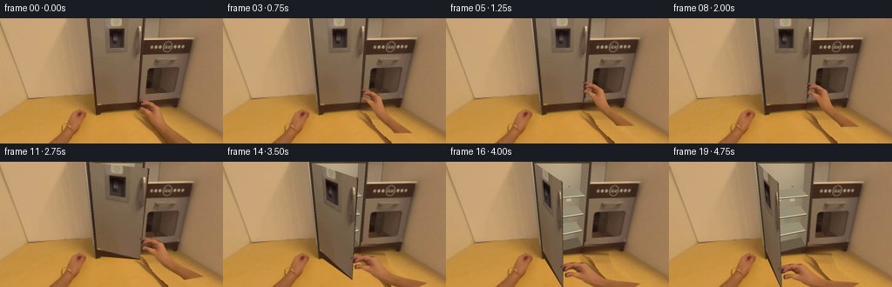
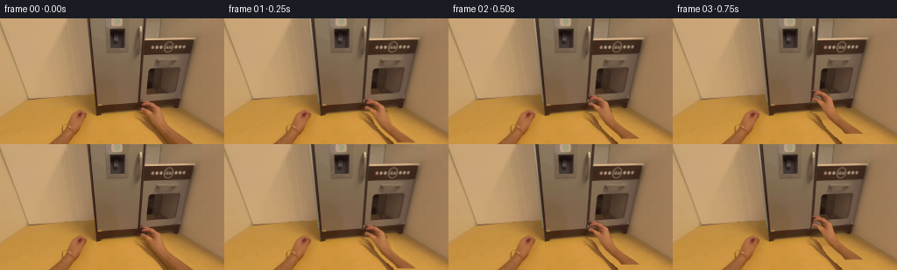
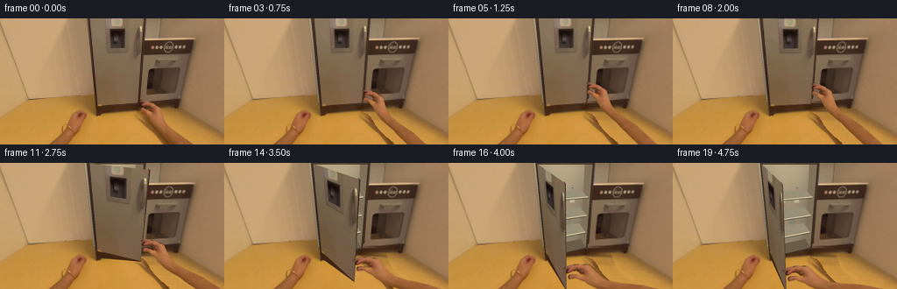
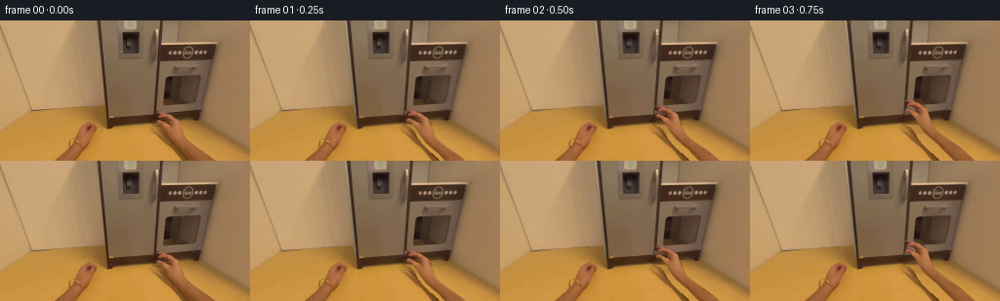

CODING AGENTS AS PIXEL WORLD MODELS
traex/GPT-6.1-Sol · common50_0020
点击播放 · 原生 RGB 像素
逐轮保存的候选
回放视频、检查图与代码变化。
每份候选均可单独播放。实际图片检查记录在下方工具轨迹中。
候选 01播放与检查图
点击播放 · 原生 RGB 像素


展开代码变化
--- 上一保存版本
+++ 本次保存版本
@@ -0,0 +1,234 @@
+"""Deterministic RGB continuation using only source pixels and analytic geometry."""
+from pathlib import Path
+import numpy as np
+from PIL import Image, ImageDraw, ImageFilter
+from scipy.ndimage import distance_transform_edt, gaussian_filter
+import artifact_io
+
+ROOT=Path(__file__).resolve().parent
+W,H=256,144
+S=3
+SIZE=(W*S,H*S)
+SOURCE=np.array(Image.open(ROOT/'first_frame.png').convert('RGB'))
+
+
+def homography(src,dst):
+ A=[]; b=[]
+ for (x,y),(u,v) in zip(src,dst):
+ A.extend([[x,y,1,0,0,0,-u*x,-u*y],[0,0,0,x,y,1,-v*x,-v*y]])
+ b.extend([u,v])
+ return np.r_[np.linalg.solve(A,b),1].reshape(3,3)
+
+
+def project(mat, pts):
+ p=np.c_[np.asarray(pts),np.ones(len(pts))]@mat.T
+ return p[:,:2]/p[:,2:]
+
+
+def poly_mask(pts,size=SIZE):
+ m=Image.new('L',size)
+ ImageDraw.Draw(m).polygon([(float(x*S),float(y*S)) for x,y in pts],fill=255)
+ return m
+
+
+def warp(im,mat,size=SIZE):
+ inv=np.linalg.inv(mat);inv/=inv[2,2]
+ return im.transform(size,Image.Transform.PERSPECTIVE,tuple(inv.flatten()[:8]),Image.Resampling.BICUBIC)
+
+
+def over(bg,fg):
+ return Image.alpha_composite(bg,fg)
+
+
+def smooth(x):
+ x=np.clip(x,0,1)
+ return x*x*(3-2*x)
+
+UNIT=np.array([[0,0],[1,0],[1,1],[0,1]],float)
+Q=np.array([[100,0],[165,0],[157,97],[111,108]],float)
+H0=homography(UNIT,Q)
+# A slightly off-centre optical axis is consistent with the cropped egocentric image.
+CX,CY=170.,72.
+vp_u=np.array([562.63636364,0.])
+vp_v=np.array([135.91662351,352.63593993])
+f=np.sqrt(-np.dot(vp_u-[CX,CY],vp_v-[CX,CY]))
+K=np.array([[f,0,CX],[0,f,CY],[0,0,1.]])
+E=np.linalg.inv(K)@H0
+A,B,C=E[:,0],E[:,1],E[:,2]
+N=np.cross(A,B);N/=np.linalg.norm(N)
+
+# Finger and forearm contour, traced numerically from the warm skin excess.
+HAND_POLY=[(159.8,93.5),(164,93.2),(169,94.6),(173.7,96.4),
+ (176.6,98.4),(180.3,100.3),(182.7,103),(184.8,110.5),(187.4,117.8),
+ (190.7,123),(195,127.1),(201.5,132.1),(209,137),(218.8,144),
+ (198.6,144),(194,139),(189,135),(184.4,131),(180.2,127),
+ (177,123.3),(173.5,118),(171.7,114),(168.8,110.7),(166.3,107.1),
+ (161.4,105.9),(159.8,104.9),(160.2,102.5),(161.5,101.6),
+ (164.3,102),(168.7,104.9),(171.8,107),(171.2,103.5),
+ (169.5,101.3),(166.7,100.1),(162.2,99.8),(160.2,98.7),
+ (160.9,97.1),(162.4,95.9),(160.3,95.1)]
+handmask=poly_mask(HAND_POLY)
+smallmask=np.array(handmask.resize((W,H),Image.Resampling.LANCZOS))/255.
+# Fill the uncovered source hand and its floor shadow from neighbouring scene pixels.
+base=SOURCE.astype(float).copy()
+solid=smallmask>.08
+cleanmask=distance_transform_edt(~solid)<2.7
+for y in range(92,H):
+ xs=np.flatnonzero(cleanmask[y])
+ if not len(xs): continue
+ l,r=xs.min(),xs.max()
+ if y<105:
+ L=max(0,l-2);R=min(W-1,r+2)
+ left=np.mean(SOURCE[y,max(0,L-3):L+1].astype(float),axis=0)
+ right=np.mean(SOURCE[y,R:min(W,R+4)].astype(float),axis=0)
+ else:
+ L=max(125,l-10);R=min(W-1,r+18)
+ left=np.median(SOURCE[y,L-5:L].astype(float),axis=0)
+ right=np.median(SOURCE[y,R:min(W,R+5)].astype(float),axis=0)
+ for x in range(l,r+1):
+ q=np.clip((x-L)/max(1,R-L),0,1)
+ col=left*(1-q)+right*q
+ # Fine image-native grain, sampled from unobstructed floor on this scanline.
+ tex=SOURCE[y,35+(x*13)%65].astype(float)
+ grain=np.mean(tex)-np.mean(SOURCE[y,35:100])
+ base[y,x]=col+np.clip(grain,-2,2)*.32
+# Gently remove the original hand's shadow to its right on the floor.
+shadow=poly_mask([(178,108),(200,108),(222,122),(245,137),(256,144),
+ (217,144),(192,124)]).resize((W,H),Image.Resampling.LANCZOS)
+sh=np.array(shadow).astype(float)/255
+for y in range(108,H):
+ # Shadow relief is deliberately weak so the existing floor shading remains.
+ base[y]+=sh[y,:,None]*np.array([5.,4.,1.5])
+base=np.clip(base,0,255).astype(np.uint8)
+base_im=Image.fromarray(base).resize(SIZE,Image.Resampling.BICUBIC).convert('RGBA')
+source_hi=Image.fromarray(SOURCE).resize(SIZE,Image.Resampling.BICUBIC).convert('RGBA')
+hand=source_hi.copy();hand.putalpha(handmask)
+door=source_hi.copy();door.putalpha(poly_mask(Q))
+
+
+def projection(theta,depth=0.):
+ aa=A*np.cos(theta)-N*np.linalg.norm(A)*np.sin(theta)
+ return K@np.column_stack((aa,B,C+N*depth))
+
+
+def xyz_project(points):
+ p=np.array(points)@K.T
+ return p[:,:2]/p[:,2:]
+
+
+def fillpoly(im,pts,color):
+ d=ImageDraw.Draw(im)
+ d.polygon([(float(x*S),float(y*S)) for x,y in pts],fill=color)
+
+# Interior: a softly lit back wall with shelves; analytically projected into the
+# original aperture and occluded by the moving door, rather than painted over it.
+DEPTH=.16
+HB=projection(0,DEPTH)
+BACKQ=project(HB,UNIT)
+INTERIOR=Image.new('RGBA',(240,360),(0,0,0,255))
+yy,xx=np.mgrid[0:360,0:240];u=xx/239.;v=yy/359.
+rng=np.random.default_rng(21)
+light=1.-.14*v-.12*(2*u-1)**2 +.10*np.exp(-((v-.10)/.22)**2)
+noise=rng.normal(0,.55,(360,240))
+a=np.array([171.,154.,126.])[None,None,:]*light[...,None]+noise[...,None]
+INTERIOR=Image.fromarray(np.clip(a,0,255).astype('uint8')).convert('RGBA')
+idraw=ImageDraw.Draw(INTERIOR)
+# A small carton and two containers in the back, with modest warm illumination.
+idraw.polygon([(165,113),(186,113),(191,122),(191,165),(164,165),(164,122)],fill=(189,178,151,255))
+idraw.polygon([(165,113),(172,105),(186,106),(186,113)],fill=(156,145,120,255))
+idraw.rectangle((174,103,181,106),fill=(89,105,104,255))
+idraw.rectangle((165,143,189,151),fill=(117,136,119,255))
+idraw.rectangle((68,158,112,180),fill=(155,137,103,255))
+idraw.rounded_rectangle((65,152,115,158),radius=2,fill=(192,181,148,255))
+idraw.rounded_rectangle((133,238,173,261),radius=5,fill=(133,130,109,255))
+idraw.rectangle((133,235,173,239),fill=(169,163,133,255))
+idraw.rectangle((30,291,213,341),fill=(139,132,108,255))
+idraw.line([(30,291),(212,291)],fill=(199,188,158,255),width=3)
+idraw.line([(35,297),(208,297)],fill=(175,164,135,255),width=2)
+TEXH=homography(np.array([[0,0],[239,0],[239,359],[0,359]],float),BACKQ*S)
+
+
+def cavity():
+ im=base_im.copy()
+ fillpoly(im,Q,(55,46,35,255))
+ # Front to back side walls.
+ fillpoly(im,[Q[0],Q[3],BACKQ[3],BACKQ[0]],(107,97,79,255))
+ fillpoly(im,[Q[1],Q[2],BACKQ[2],BACKQ[1]],(129,113,90,255))
+ fillpoly(im,[Q[0],Q[1],BACKQ[1],BACKQ[0]],(181,164,134,255))
+ fillpoly(im,[Q[3],Q[2],BACKQ[2],BACKQ[3]],(107,92,71,255))
+ im=over(im,warp(INTERIOR,TEXH))
+ # Real planar shelf geometry bridges front and back of the recess.
+ for v0 in [.32,.53,.75]:
+ corners=[C+A*.06+B*v0,C+A*.94+B*v0,
+ C+A*.94+B*v0+N*DEPTH,C+A*.06+B*v0+N*DEPTH]
+ q=xyz_project(corners)
+ fillpoly(im,q,(152,144,119,255))
+ d=ImageDraw.Draw(im)
+ d.line([tuple(q[0]*S),tuple(q[1]*S)],fill=(211,195,157,255),width=2*S)
+ d.line([tuple((q[0]+[0,1])*S),tuple((q[1]+[0,1])*S)],fill=(79,72,56,255),width=S)
+ # Thin gasket around the original opening.
+ d=ImageDraw.Draw(im)
+ d.line([tuple(p*S) for p in np.vstack([Q,Q[0]])],fill=(63,50,35,255),width=2*S)
+ return im
+
+CAVITY=cavity()
+
+
+def generate():
+ frames=[SOURCE.copy()]
+ orig_grip=np.array([162.,97.])
+ reach=project(H0,[[1,.73]])[0]+[1.,0]
+ for i in range(1,20):
+ t=i/4
+ theta=1.48*smooth((t-1.75)/2.65)
+ ht=projection(theta)
+ # The door's rear edge projects separately, giving a narrow, visible thickness.
+ qr=project(projection(theta,.025),UNIT)
+ qf=project(ht,UNIT)
+ im=CAVITY.copy()
+ for j,k in [(1,2),(3,2)]:
+ fillpoly(im,[qf[j],qf[k],qr[k],qr[j]],(83,70,55,255))
+ # Exact source texture attached to the rotating rigid plane.
+ D=ht@np.linalg.inv(H0)
+ Ds=np.diag([S,S,1.])@D@np.diag([1/S,1/S,1.])
+ moving=warp(door,Ds)
+ # The reflected room light gradually falls away as the metal turns.
+ m=np.array(moving).astype(float)
+ shade=1.-.11*np.sin(theta)
+ m[:,:,:3]*=shade
+ moving=Image.fromarray(np.clip(m,0,255).astype(np.uint8))
+ im=over(im,moving)
+ # Contact follows the free door edge, never sliding across the panel.
+ grip=project(ht,[[1,.73]])[0]+[1.,.5]
+ approach=smooth(t/1.35)
+ target=orig_grip*(1-approach)+reach*approach if t<1.75 else grip
+ # The wrist rolls as the right arm pulls. Skin is copied from the real source.
+ rot=-.36*theta
+ scale=1.+.22*np.sin(theta)
+ cs,sn=np.cos(rot)*scale,np.sin(rot)*scale
+ R=np.array([[cs,-sn],[sn,cs]])
+ trans=target-R@orig_grip
+ M=np.array([[R[0,0],R[0,1],trans[0]],[R[1,0],R[1,1],trans[1]],[0,0,1.]])
+ Ms=np.diag([S,S,1.])@M@np.diag([1/S,1/S,1.])
+ hand_m=warp(hand,Ms)
+ # A very small soft contact shadow grounds the finger on the door.
+ alpha=hand_m.getchannel('A')
+ sh=Image.new('RGBA',SIZE,(30,20,12,0))
+ sh.putalpha(alpha.filter(ImageFilter.GaussianBlur(2.1)).point(lambda x:int(x*.21)))
+ im=over(im,sh)
+ im=over(im,hand_m)
+ # Restrained body sway during the pull, with no sudden cut or zoom.
+ dx=.65*np.sin(theta)*np.sin(t*1.7)
+ dy=.45*np.sin(theta)
+ if theta>.002:
+ im=im.transform(SIZE,Image.Transform.AFFINE,(1,0,-dx*S,0,1,-dy*S),Image.Resampling.BICUBIC)
+ # Avoid a transparent image boundary during subpixel camera sway.
+ im=Image.alpha_composite(base_im,im)
+ out=np.array(im.convert('RGB').resize((W,H),Image.Resampling.LANCZOS))
+ frames.append(out)
+ return np.stack(frames).astype(np.uint8)
+
+if __name__=='__main__':
+ result=generate()
+ artifact_io.save(result,ROOT)
+ print('Saved',result.shape,result.dtype,'First frame exact:',np.array_equal(result[0],SOURCE))
候选 02播放与检查图
点击播放 · 原生 RGB 像素


展开代码变化
--- 上一保存版本
+++ 本次保存版本
@@ -104,6 +104,24 @@
source_hi=Image.fromarray(SOURCE).resize(SIZE,Image.Resampling.BICUBIC).convert('RGBA')
hand=source_hi.copy();hand.putalpha(handmask)
door=source_hi.copy();door.putalpha(poly_mask(Q))
+
+# The real forearm continues beyond the crop. Extend its existing cross-section
+# so reaching up cannot reveal an artificial straight cutoff at the old border.
+arm_size=(360,250)
+extended=np.zeros((arm_size[1],arm_size[0],3),dtype=np.uint8)
+extended[:H,:W]=SOURCE
+for y in range(H,arm_size[1]):
+ center=207.+1.08*(y-143)
+ for x in range(max(0,int(center-15)),min(arm_size[0],int(center+16))):
+ rel=x-center
+ sy=130+(y-144)%13
+ sx=int(np.clip(191.5+(sy-130)*1.20+rel*.68,0,W-1))
+ extended[y,x]=SOURCE[sy,sx]
+extended_poly=HAND_POLY.copy()
+at=extended_poly.index((218.8,144))
+extended_poly[at:at+2]=[(218.8,144),(333,250),(308,250),(198.6,144)]
+hand=Image.fromarray(extended).resize((arm_size[0]*S,arm_size[1]*S),Image.Resampling.BICUBIC).convert('RGBA')
+hand.putalpha(poly_mask(extended_poly,hand.size))
def projection(theta,depth=0.):
可观测工具轨迹
实际执行的命令与返回图片。
命令 1exit 0
/bin/bash -lc 'ls -la; cat prompt.txt; cat GENERATION_RULES.md'
命令 2exit 0
/bin/bash -lc "cat task_spec.json; cat artifact_io.py; python - <<'PY'
from PIL import Image
import numpy as np
im=np.array(Image.open('first_frame.png')); print(im.shape)
im=Image.fromarray(im).resize((64,36)); a=np.array(im)
chars=' .:-=+*#%@'
for row in a:
print(''.join(chars[int(c.mean())*9//256] for c in row))
print('RGB grid 16x9')
a=np.array(Image.open('first_frame.png').resize((16,9)))
for y,row in enumerate(a): print(y, ' '.join('%02x%02x%02x'%tuple(v) for v in row))
PY"命令 3exit 0
/bin/bash -lc "python - <<'PY'
import numpy as np
from PIL import Image,ImageFilter,ImageEnhance
im=Image.open('first_frame.png'); a=np.asarray(im)
print('minmax',a.min((0,1)),a.max((0,1)))
b=np.asarray(im.resize((128,72))).mean(2)
print('brightness')
for y,row in enumerate(b): print('%03d '%(y*2)+''.join(' .,:;irsXA253hMHGS#9B&@'[min(21,int(v*22/256))] for v in row))
print('edges')
b=np.array(im.resize((128,72))).mean(2); dx=np.zeros_like(b);dy=dx.copy();dx[:,1:]=abs(b[:,1:]-b[:,:-1]);dy[1:]=abs(b[1:]-b[:-1]); e=np.maximum(dx,dy)
for y,row in enumerate(e):print('%03d '%(y*2)+''.join(' ' if v<5 else '.' if v<10 else '+' if v<20 else '#' if v<40 else '@' for v in row))
PY"命令 4exit 0
/bin/bash -lc "python - <<'PY'
from PIL import Image
import numpy as np
a=np.array(Image.open('first_frame.png'))
for y in [0,10,20,40,60,80,90,100,110,120,130,140]:
print('\\ny=',y)
for x in range(0,256,8): print(f'{x}: {tuple(a[y,x])}',end='; ')
print()
# rgb crop symbols: luminance local
for box in [(95,0,170,112),(148,85,256,144),(56,102,104,144)]:
x0,y0,x1,y1=box; b=a[y0:y1,x0:x1].mean(2);print('\\nCROP',box)
for y in range(0,b.shape[0],2): print('%03d '%(y0+y)+''.join(' .,:;irsXA253hMHGS#9B&@'[min(21,int(v*22/256))] for v in b[y]))
PY"命令 5exit 0
/bin/bash -lc "python - <<'PY'
from PIL import Image
import numpy as np
a=np.array(Image.open('first_frame.png')).astype(float)
# red excess roughly fridge R-G 22 hand 45 floor55: R-G divided G-B greater
for typ in ['redness','ratio','rgb_labels']:
print(typ,'x120...235 y80...143')
for y in range(80,144,2):
out=''
for x in range(120,236):
r,g,b=a[y,x]
if typ=='redness': v=r-g; ch=' .,:irsXA235hHM#@'[max(0,min(15,int(v/5)))];
elif typ=='ratio': v=(r-g)/(g-b+1); ch=' ' if v<.8 else '.' if v<1 else ':' if v<1.2 else '*' if v<1.4 else 'X' if v<1.6 else '#' if v<2 else '@'
else:
ch=' ' if r<80 else 'd' if r<110 else 'm' if r-g<36 else 's' if g-b<48 else 'F'
out+=ch
print(f'{y:3d} '+out)
print('ROI rgb 2px')
for y in range(88,112,2):
print('y',y)
print(' '.join(f'{x}:{tuple(a[y,x].astype(int))}' for x in range(150,194,3)))
PY"命令 6exit 0
/bin/bash -lc "python - <<'PY'
import numpy as np
from PIL import Image
a=np.array(Image.open('first_frame.png')).astype(float)
for y in range(91,144):
r,g,b=a[y,:,0],a[y,:,1],a[y,:,2]; m=(r-g>35)&((r-g)/(g-b+1)>1.17)&(r>92)
xs=np.where(m&(np.arange(256)>152)&(np.arange(256)<228))[0]
# contiguous
runs=[]
for x in xs:
if not runs or x>runs[-1][-1]+1:runs.append([x])
else:runs[-1].append(x)
print(y,' '.join(f'{rr[0]}-{rr[-1]}' for rr in runs))
PY"命令 7exit 0
/bin/bash -lc "python - <<'PY'
import numpy as np
from PIL import Image
im=np.array(Image.open('first_frame.png'))
# 4 pix means contour locations
for y in [0,8,16,22,24,30,40,50,60,70,80,90,96,100,106]:
print(y,' '.join('%s:%s'%(x,tuple(im[y,x].tolist())) for x in range(150,238,4)))
# edge high contrast x-coordinate counts
b=im.astype(float).mean(2)
for y in range(0,110,4):
d=abs(b[y,1:]-b[y,:-1]); xs=np.where(d[145:238]>13)[0]+146
print(y, list(xs))
PY"命令 8exit 0
/bin/bash -lc "python - <<'PY'
import numpy as np
q=np.array([[100.,0],[165,0],[157,97],[111,108]])
def line(a,b):return np.cross(np.r_[a,1],np.r_[b,1])
u=np.cross(line(q[0],q[1]),line(q[3],q[2]));u/=u[2]
v=np.cross(line(q[0],q[3]),line(q[1],q[2]));v/=v[2]
print(u,v,'f2',-np.dot(u[:2]-[128,72],v[:2]-[128,72]))
# recover H
src=np.array([[0,0],[1,0],[1,1],[0,1]])
A=[];B=[]
for (x,y),(u0,v0) in zip(src,q):
A.extend([[x,y,1,0,0,0,-u0*x,-u0*y],[0,0,0,x,y,1,-v0*x,-v0*y]]);B.extend([u0,v0])
H=np.r_[np.linalg.solve(A,B),1].reshape(3,3);print(H)
f=np.sqrt(-np.dot(u[:2]-[128,72],v[:2]-[128,72]));K=np.array([[f,0,128],[0,f,72],[0,0,1.]])
E=np.linalg.inv(K)@H
print(f,E,'norms',np.linalg.norm(E[:,0]),np.linalg.norm(E[:,1]),'dot',E[:,0]@E[:,1])
a=E[:,0];b=E[:,1];n=np.cross(a,b);n/=np.linalg.norm(n);print('normal',n)
for theta in [0,.2,.5,.8,1,1.2,1.4]:
# rotate a towards outward normal negative n
aa=a*np.cos(theta)-n*np.linalg.norm(a)*np.sin(theta)
hh=K@np.column_stack((aa,b,E[:,2]))
out=(hh@np.c_[src,np.ones(4)].T).T;out=out[:,:2]/out[:,2:]
print(theta,np.round(out,1))
PY"命令 9exit 0
/bin/bash -lc "python - <<'PY'
import numpy as np
H=np.array([[91.97187929,60.00342936,100],[0,155.67901235,0],[.16346594,.44147234,1]])
u=np.array([562.63636364,0]);v=np.array([135.91662351,352.63593993]);src=np.array([[0,0,1],[1,0,1],[1,1,1],[0,1,1]])
for cx in [128,170,190,220]:
f=np.sqrt(-np.dot(u-[cx,72],v-[cx,72]));K=np.array([[f,0,cx],[0,f,72],[0,0,1.]])
E=np.linalg.inv(K)@H;a=E[:,0];b=E[:,1];n=np.cross(a,b);n/=np.linalg.norm(n)
print('cx',cx,'f',f,'n',n)
for t in [.5,1,1.35]:
aa=a*np.cos(t)-n*np.linalg.norm(a)*np.sin(t); hh=K@np.column_stack((aa,b,E[:,2]));q=src@hh.T;q=q[:,:2]/q[:,2:];print(t,q.round(1))
PY"命令 10exit 0
/bin/bash -lc "python - <<'PY' import importlib.util for name in ['cv2','scipy']: print(name,importlib.util.find_spec(name)) PY"
命令 11exit 0
/bin/bash -lc "cat > generate.py <<'PY'
\"\"\"Deterministic RGB continuation using only source pixels and analytic geometry.\"\"\"
from pathlib import Path
import numpy as np
from PIL import Image, ImageDraw, ImageFilter
from scipy.ndimage import distance_transform_edt, gaussian_filter
import artifact_io
ROOT=Path(__file__).resolve().parent
W,H=256,144
S=3
SIZE=(W*S,H*S)
SOURCE=np.array(Image.open(ROOT/'first_frame.png').convert('RGB'))
def homography(src,dst):
A=[]; b=[]
for (x,y),(u,v) in zip(src,dst):
A.extend([[x,y,1,0,0,0,-u*x,-u*y],[0,0,0,x,y,1,-v*x,-v*y]])
b.extend([u,v])
return np.r_[np.linalg.solve(A,b),1].reshape(3,3)
def project(mat, pts):
p=np.c_[np.asarray(pts),np.ones(len(pts))]@mat.T
return p[:,:2]/p[:,2:]
def poly_mask(pts,size=SIZE):
m=Image.new('L',size)
ImageDraw.Draw(m).polygon([(float(x*S),float(y*S)) for x,y in pts],fill=255)
return m
def warp(im,mat,size=SIZE):
inv=np.linalg.inv(mat);inv/=inv[2,2]
return im.transform(size,Image.Transform.PERSPECTIVE,tuple(inv.flatten()[:8]),Image.Resampling.BICUBIC)
def over(bg,fg):
return Image.alpha_composite(bg,fg)
def smooth(x):
x=np.clip(x,0,1)
return x*x*(3-2*x)
UNIT=np.array([[0,0],[1,0],[1,1],[0,1]],float)
Q=np.array([[100,0],[165,0],[157,97],[111,108]],float)
H0=homography(UNIT,Q)
# A slightly off-centre optical axis is consistent with the cropped egocentric image.
CX,CY=170.,72.
vp_u=np.array([562.63636364,0.])
vp_v=np.array([135.91662351,352.63593993])
f=np.sqrt(-np.dot(vp_u-[CX,CY],vp_v-[CX,CY]))
K=np.array([[f,0,CX],[0,f,CY],[0,0,1.]])
E=np.linalg.inv(K)@H0
A,B,C=E[:,0],E[:,1],E[:,2]
N=np.cross(A,B);N/=np.linalg.norm(N)
# Finger and forearm contour, traced numerically from the warm skin excess.
HAND_POLY=[(159.8,93.5),(164,93.2),(169,94.6),(173.7,96.4),
(176.6,98.4),(180.3,100.3),(182.7,103),(184.8,110.5),(187.4,117.8),
(190.7,123),(195,127.1),(201.5,132.1),(209,137),(218.8,144),
(198.6,144),(194,139),(189,135),(184.4,131),(180.2,127),
(177,123.3),(173.5,118),(171.7,114),(168.8,110.7),(166.3,107.1),
(161.4,105.9),(159.8,104.9),(160.2,102.5),(161.5,101.6),
(164.3,102),(168.7,104.9),(171.8,107),(171.2,103.5),
(169.5,101.3),(166.7,100.1),(162.2,99.8),(160.2,98.7),
(160.9,97.1),(162.4,95.9),(160.3,95.1)]
handmask=poly_mask(HAND_POLY)
smallmask=np.array(handmask.resize((W,H),Image.Resampling.LANCZOS))/255.
# Fill the uncovered source hand and its floor shadow from neighbouring scene pixels.
base=SOURCE.astype(float).copy()
solid=smallmask>.08
cleanmask=distance_transform_edt(~solid)<2.7
for y in range(92,H):
xs=np.flatnonzero(cleanmask[y])
if not len(xs): continue
l,r=xs.min(),xs.max()
if y<105:
L=max(0,l-2);R=min(W-1,r+2)
left=np.mean(SOURCE[y,max(0,L-3):L+1].astype(float),axis=0)
right=np.mean(SOURCE[y,R:min(W,R+4)].astype(float),axis=0)
else:
L=max(125,l-10);R=min(W-1,r+18)
left=np.median(SOURCE[y,L-5:L].astype(float),axis=0)
right=np.median(SOURCE[y,R:min(W,R+5)].astype(float),axis=0)
for x in range(l,r+1):
q=np.clip((x-L)/max(1,R-L),0,1)
col=left*(1-q)+right*q
# Fine image-native grain, sampled from unobstructed floor on this scanline.
tex=SOURCE[y,35+(x*13)%65].astype(float)
grain=np.mean(tex)-np.mean(SOURCE[y,35:100])
base[y,x]=col+np.clip(grain,-2,2)*.32
# Gently remove the original hand's shadow to its right on the floor.
shadow=poly_mask([(178,108),(200,108),(222,122),(245,137),(256,144),
(217,144),(192,124)]).resize((W,H),Image.Resampling.LANCZOS)
sh=np.array(shadow).astype(float)/255
for y in range(108,H):
# Shadow relief is deliberately weak so the existing floor shading remains.
base[y]+=sh[y,:,None]*np.array([5.,4.,1.5])
base=np.clip(base,0,255).astype(np.uint8)
base_im=Image.fromarray(base).resize(SIZE,Image.Resampling.BICUBIC).convert('RGBA')
source_hi=Image.fromarray(SOURCE).resize(SIZE,Image.Resampling.BICUBIC).convert('RGBA')
hand=source_hi.copy();hand.putalpha(handmask)
door=source_hi.copy();door.putalpha(poly_mask(Q))
def projection(theta,depth=0.):
aa=A*np.cos(theta)-N*np.linalg.norm(A)*np.sin(theta)
return K@np.column_stack((aa,B,C+N*depth))
def xyz_project(points):
p=np.array(points)@K.T
return p[:,:2]/p[:,2:]
def fillpoly(im,pts,color):
d=ImageDraw.Draw(im)
d.polygon([(float(x*S),float(y*S)) for x,y in pts],fill=color)
# Interior: a softly lit back wall with shelves; analytically projected into the
# original aperture and occluded by the moving door, rather than painted over it.
DEPTH=.16
HB=projection(0,DEPTH)
BACKQ=project(HB,UNIT)
INTERIOR=Image.new('RGBA',(240,360),(0,0,0,255))
yy,xx=np.mgrid[0:360,0:240];u=xx/239.;v=yy/359.
rng=np.random.default_rng(21)
light=1.-.14*v-.12*(2*u-1)**2 +.10*np.exp(-((v-.10)/.22)**2)
noise=rng.normal(0,.55,(360,240))
a=np.array([171.,154.,126.])[None,None,:]*light[...,None]+noise[...,None]
INTERIOR=Image.fromarray(np.clip(a,0,255).astype('uint8')).convert('RGBA')
idraw=ImageDraw.Draw(INTERIOR)
# A small carton and two containers in the back, with modest warm illumination.
idraw.polygon([(165,113),(186,113),(191,122),(191,165),(164,165),(164,122)],fill=(189,178,151,255))
idraw.polygon([(165,113),(172,105),(186,106),(186,113)],fill=(156,145,120,255))
idraw.rectangle((174,103,181,106),fill=(89,105,104,255))
idraw.rectangle((165,143,189,151),fill=(117,136,119,255))
idraw.rectangle((68,158,112,180),fill=(155,137,103,255))
idraw.rounded_rectangle((65,152,115,158),radius=2,fill=(192,181,148,255))
idraw.rounded_rectangle((133,238,173,261),radius=5,fill=(133,130,109,255))
idraw.rectangle((133,235,173,239),fill=(169,163,133,255))
idraw.rectangle((30,291,213,341),fill=(139,132,108,255))
idraw.line([(30,291),(212,291)],fill=(199,188,158,255),width=3)
idraw.line([(35,297),(208,297)],fill=(175,164,135,255),width=2)
TEXH=homography(np.array([[0,0],[239,0],[239,359],[0,359]],float),BACKQ*S)
def cavity():
im=base_im.copy()
fillpoly(im,Q,(55,46,35,255))
# Front to back side walls.
fillpoly(im,[Q[0],Q[3],BACKQ[3],BACKQ[0]],(107,97,79,255))
fillpoly(im,[Q[1],Q[2],BACKQ[2],BACKQ[1]],(129,113,90,255))
fillpoly(im,[Q[0],Q[1],BACKQ[1],BACKQ[0]],(181,164,134,255))
fillpoly(im,[Q[3],Q[2],BACKQ[2],BACKQ[3]],(107,92,71,255))
im=over(im,warp(INTERIOR,TEXH))
# Real planar shelf geometry bridges front and back of the recess.
for v0 in [.32,.53,.75]:
corners=[C+A*.06+B*v0,C+A*.94+B*v0,
C+A*.94+B*v0+N*DEPTH,C+A*.06+B*v0+N*DEPTH]
q=xyz_project(corners)
fillpoly(im,q,(152,144,119,255))
d=ImageDraw.Draw(im)
d.line([tuple(q[0]*S),tuple(q[1]*S)],fill=(211,195,157,255),width=2*S)
d.line([tuple((q[0]+[0,1])*S),tuple((q[1]+[0,1])*S)],fill=(79,72,56,255),width=S)
# Thin gasket around the original opening.
d=ImageDraw.Draw(im)
d.line([tuple(p*S) for p in np.vstack([Q,Q[0]])],fill=(63,50,35,255),width=2*S)
return im
CAVITY=cavity()
def generate():
frames=[SOURCE.copy()]
orig_grip=np.array([162.,97.])
reach=project(H0,[[1,.73]])[0]+[1.,0]
for i in range(1,20):
t=i/4
theta=1.48*smooth((t-1.75)/2.65)
ht=projection(theta)
# The door's rear edge projects separately, giving a narrow, visible thickness.
qr=project(projection(theta,.025),UNIT)
qf=project(ht,UNIT)
im=CAVITY.copy()
for j,k in [(1,2),(3,2)]:
fillpoly(im,[qf[j],qf[k],qr[k],qr[j]],(83,70,55,255))
# Exact source texture attached to the rotating rigid plane.
D=ht@np.linalg.inv(H0)
Ds=np.diag([S,S,1.])@D@np.diag([1/S,1/S,1.])
moving=warp(door,Ds)
# The reflected room light gradually falls away as the metal turns.
m=np.array(moving).astype(float)
shade=1.-.11*np.sin(theta)
m[:,:,:3]*=shade
moving=Image.fromarray(np.clip(m,0,255).astype(np.uint8))
im=over(im,moving)
# Contact follows the free door edge, never sliding across the panel.
grip=project(ht,[[1,.73]])[0]+[1.,.5]
approach=smooth(t/1.35)
target=orig_grip*(1-approach)+reach*approach if t<1.75 else grip
# The wrist rolls as the right arm pulls. Skin is copied from the real source.
rot=-.36*theta
scale=1.+.22*np.sin(theta)
cs,sn=np.cos(rot)*scale,np.sin(rot)*scale
R=np.array([[cs,-sn],[sn,cs]])
trans=target-R@orig_grip
M=np.array([[R[0,0],R[0,1],trans[0]],[R[1,0],R[1,1],trans[1]],[0,0,1.]])
Ms=np.diag([S,S,1.])@M@np.diag([1/S,1/S,1.])
hand_m=warp(hand,Ms)
# A very small soft contact shadow grounds the finger on the door.
alpha=hand_m.getchannel('A')
sh=Image.new('RGBA',SIZE,(30,20,12,0))
sh.putalpha(alpha.filter(ImageFilter.GaussianBlur(2.1)).point(lambda x:int(x*.21)))
im=over(im,sh)
im=over(im,hand_m)
# Restrained body sway during the pull, with no sudden cut or zoom.
dx=.65*np.sin(theta)*np.sin(t*1.7)
dy=.45*np.sin(theta)
if theta>.002:
im=im.transform(SIZE,Image.Transform.AFFINE,(1,0,-dx*S,0,1,-dy*S),Image.Resampling.BICUBIC)
# Avoid a transparent image boundary during subpixel camera sway.
im=Image.alpha_composite(base_im,im)
out=np.array(im.convert('RGB').resize((W,H),Image.Resampling.LANCZOS))
frames.append(out)
return np.stack(frames).astype(np.uint8)
if __name__=='__main__':
result=generate()
artifact_io.save(result,ROOT)
print('Saved',result.shape,result.dtype,'First frame exact:',np.array_equal(result[0],SOURCE))
PY
python generate.py"命令 12exit 0
/bin/bash -lc "python - <<'PY'
from PIL import Image
import numpy as np
f=np.stack([np.array(Image.open(f'frames/{i:02}.png')) for i in range(20)])
print('frame changes',np.round(np.abs(np.diff(f.astype(float),axis=0)).mean((1,2,3)),2))
for i in [1,5,9,13,17,19]:
print('\\nframe',i)
a=np.array(Image.fromarray(f[i]).resize((96,54))).mean(2)
for y in range(54):print(''.join(' .,:;irsXA253hMHGS#9B&@'[min(21,int(v*22/256))] for v in a[y]))
PY"命令 13exit 0
/bin/bash -lc "python - <<'PY' import generate as g import numpy as np for t in [0,1.25,2.75,3.5,4.75]: th=1.48*g.smooth((t-1.75)/2.65);target=g.project(g.projection(th),[[1,.73]])[0]+[1,.5] if t>=1.75 else np.array([162.,97.])*(1-g.smooth(t/1.35))+g.project(g.H0,[[1,.73]])[0]*g.smooth(t/1.35) r=-.36*th;s=1+.22*np.sin(th);R=np.array([[np.cos(r),-np.sin(r)],[np.sin(r),np.cos(r)]])*s print(t,th,target,'end',target+R@(np.array([208.,144])-np.array([162.,97.]))) PY"
命令 14exit 0
/bin/bash -lc "python generate.py; python - <<'PY'
from PIL import Image
import numpy as np
f=np.array(Image.open('frames/05.png'))
# Inspect bottom boundary for arm continuity and overall contract.
r,g,b=f[-1,:,0].astype(float),f[-1,:,1].astype(float),f[-1,:,2].astype(float)
m=(r-g)/(g-b+1)>1.25
print('frame 5 skin at bottom:',np.where(m & (np.arange(256)>160))[0].tolist())
a=np.load('pixels.npz')['pixels'];print('tensor',a.shape,a.dtype)
print('first frame pixel match:',np.array_equal(np.array(Image.open('frames/00.png')),np.array(Image.open('first_frame.png'))))
print('frames',len(__import__('pathlib').Path('frames').glob('*.png').__iter__().__next__().name))
PY"保存候选 2 份；完成命令 14 次；可验证图片返回 0 张。原始 API 响应与完整日志保留在本地。